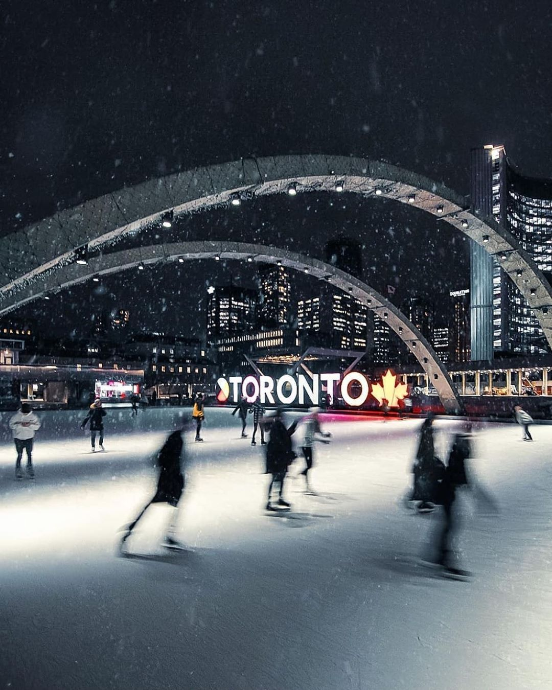

Image by Victor, "Canadian Landscape" CC
What is Canada?
Canada is probably one of the first countries that you can remember when thinking about a snowy forest in the mountains. With everything from mountains to moose, Canada's nature is truely a sight to see. But even though the nature itself is pretty exclusive to Canada, that's not the only thing that makes it special. Because Canada is a country which has welcomed people from across the world, and with these people come various coutures and nationalities. This means that Canada not only has a ton of cool places and sights to see, but that it also has a wide variety of cultures and traditions. There are 140 different language speakers in Toronto alone, and almost half of the population in Canada are outsiders. Culture that they got from outside are: St. Patrick's Day and Labor Day are weekends.
Written by Daniel Parraguez Öberg
Sports in Canada
Canada, much like a lot of other countries in the world, have a national sport that is a part of their culture. The sport is called ice hockey, and it was created in Canada way back in 1875. The term hockey is actually a family of sports that involves sticks and goals, where a team must score goals by shooting an object with their stick into a goal. The sport that is specific to Canada though is ice hockey and is on a surface level just hockey except it’s on ice and you shoot a puck to score. Ice hockey is a large part of Canadian culture to the point where there are indoor and outdoor ice hockey rinks in almost every single community in the country so that the people can play it whenever they feel like it!
Food!
Maple syrup is a very popular syrup that comes from Canada. According to statistics, 71% of the world’s maple syrup comes from Canada. But even though maple syrup comes from Canada, that’s not the only reason why it’s a part of Canadian culture. Maple syrup has a long history that dates back to the country’s indigenous people. They taught the Canadian settlers to boil sap from maple trees to then make maple syrup. Not only is it a part of Canadian culture, but it is also a part of their economy. Canada produced a whopping 14.29 million gallons of maple syrup in 2020, which is the most they’ve ever made. A lot of this is exported to other countries, with their main importer being America.

Stacy Spensley, "maple syrup" CC
Another popular food other than maple syrup is a dish called poutine. Poutine is a mix of french fries and cheese curds with gravy to top it off. It’s a popular meal in Canada, but it’s also made into a fast food dish in many parts of the country. It originated in Quebec, which is the largest of the thirteen provinces and territories of Canada. There are many variations of poutine, but they are generally looked down on compared to the real deal, for example, a variation where you remove the cheese. This variation is still called poutine for most, but for some of the Quebecs, it’s a completely different food called “frite sauce” which surprisingly just means french fries with gravy.
Visual arts
Canada has a history of handicrafts and sculptures that have existed since the earliest of Canadian history, but even though this is the case scholars and museums only started to notice them around the 20th century. Such art pieces as stone carvings from the Inuits or the totem-pole carvings from Northwest Coast Indigenous people. The settlers also had their own art and painting styles that had clear American and European influences, but some of them wanted to create a distinctly Canadian painting style to add to their culture. This painting style was very inspired by the landscape of Canada, which includes many mountains, rivers and forests.

Written by Jonathan
Niagara falls
There are many beautiful places to visit and see in Canada. One of the biggest and most known is Niagara falls which attracts millions of people every year. Just an hour away from Toronto, on the border between America and Canada these huge waterfalls are approximately 187 feet tall. The niagara falls are divided into 3 parts the american falls, the canadian falls and the bridal veil falls with 2 of them being located in canada and the american falls being located in america. Some interesting facts about the Niagara falls, throughout time people have been trying to jump down the Niagara falls in barrels, boats etc and in the last 15 years 2 people have died trying.and the first person known to have succeeded was a 63 year old school teacher.

Banff national park
Another beautiful location in Canada are their national parks made up of long mountain ranges. One of the biggest and well known is Banff National park located in the beautiful province of alberta. banff have a lot of nature related activities like swimming in its beutiful and turquoise lakes or hiking in its huge mountain ranges. altho this park is mostly known for a lake named lake louise which got its name from the princess louise and its known for its turquoise waters and beautiful mountain scenery.
Old montreal
Lastly but certainly not least is old montreal. If you are feeling like taking a hike in the mountains or spending a day around Niagara falls is a bit too much. Then old Montreal is a perfect sight to visit, with old, historic architecture close to Sweden's “gamla stan” making it a perfect atmosphere with a mix of familyarity to give you comfort while resting at a cafe or visiting one of its many shops. and if you choose to visit old Montreal there is always the marche bonsecours its old town hall, which is a must see while you are there.

Written by Mehedi

Cottage Day
Cottage day is a day where you spend your holiday up north. People celebrate this day at the end of summer on lakes, with campfires, memorable sunsets and maybe with some activities such as boat rides or other types of water activities. When it's about food and video, then they got milkshakes and hamburger. And spend time with friends or families with loud music on a lakeside in the evening.
May 2-4, Victoria Day
This day is also known as Victoria day, which is a public holiday that is celebrated on the last monday of may. They are to celebrate the queen's birthday and it has always been the same ever since Canada's monarch time. Although many Canadians see “May two-fourth” as the beginning of summer. It is known as Victoria day because of the fact that the queen's name is Victoria.
Canadians thanksgiving
Canadian's thanksgiving is one of most famous and celebrated tradition in Canada, which is celebrated on the 2nd monday of october. This tradition is linked with the Harvests festival because it's in autumn. Instead of having parade and floats on this day, people celebrate this time with their family and friends for having a relaxed moment. People usually eat a wide variety of foods on this day, but some fundamental foods are turkey, pumpkin pie and sweet potatoes.

Sarah Frimpong, "the beautiful world" CC
Marsha Heffner, "~~~Yer So Sweet~~~"" CC
Beaver tails
Contrary to popular belief, Canadians don't actually eat beaver tails. Instead it's celebrated with giant deep fried sweet delicacies. They're made of a dough that is long and flat, and then deep fried and served in a sleeve of paper. After that, they add a mix of sugar and cinnamon sprinkles on the top. Other sweet stuff that you can find are maple cream, chocolate spread and cookies. This is the best ideal meal after spending time on a pond or skating rink because this tradition is more usual in the winter.